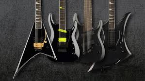
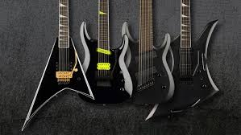

Guitarras de todo tipo!
 

Te damos la bienvenida!!!
¡Bienvenido a MusecK! Sumérgete en el fascinante mundo de la música con nosotros en MusecK, tu destino definitivo para todo lo relacionado con las guitarras. En nuestra plataforma, encontrarás una experiencia única y especializada dedicada a los amantes de las cuerdas, donde podrás explorar, comprar y vender una amplia variedad de guitarras, desde clásicas acústicas hasta potentes eléctricas. Con una exclusiva sección de mercado, MusecK te ofrece un vibrante espacio para comprar y vender guitarras, convirtiéndolo en un mercado virtual exclusivo para los entusiastas de la música. Además, nuestra sección de información sobre guitarras te brinda todo lo que necesitas saber sobre los distintos tipos y modelos de guitarras, ayudándote a tomar decisiones informadas sobre tu próxima compra. Mantente al día con las últimas novedades en el mundo de las guitarras a través de nuestra sección de noticias, donde encontrarás lanzamientos de nuevos modelos, consejos de mantenimiento y técnicas de interpretación para inspirarte en tu viaje musical. ¿Eres nuevo aquí? No te preocupes, también ofrecemos secciones de registro e inicio de sesión para que puedas unirte a nuestra comunidad de entusiastas de la música y disfrutar de todas las características que MusecK tiene para ofrecer. Únete a nosotros en MusecK y lleva tu pasión por la música al siguiente nivel. ¡Comienza tu viaje musical hoy mismo!